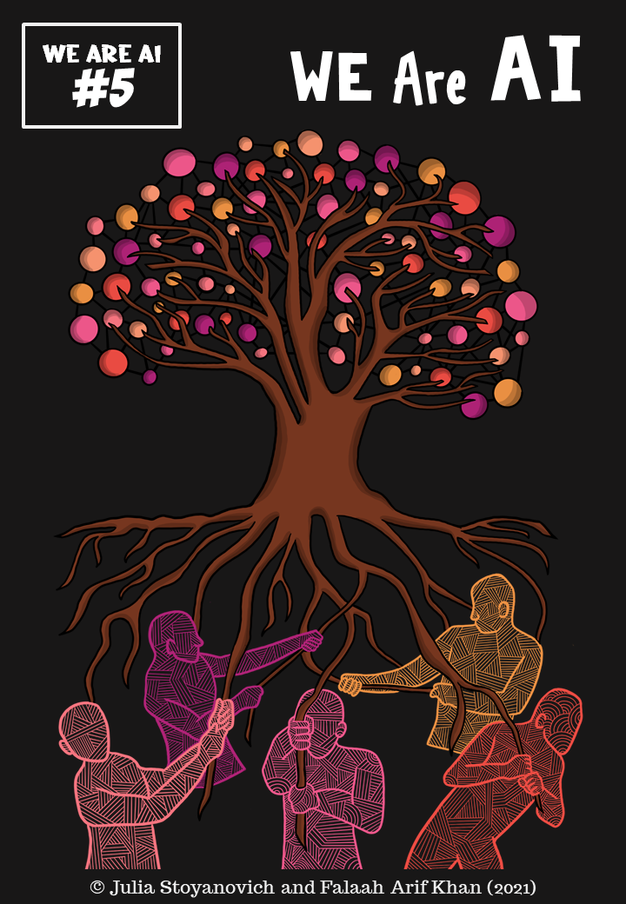
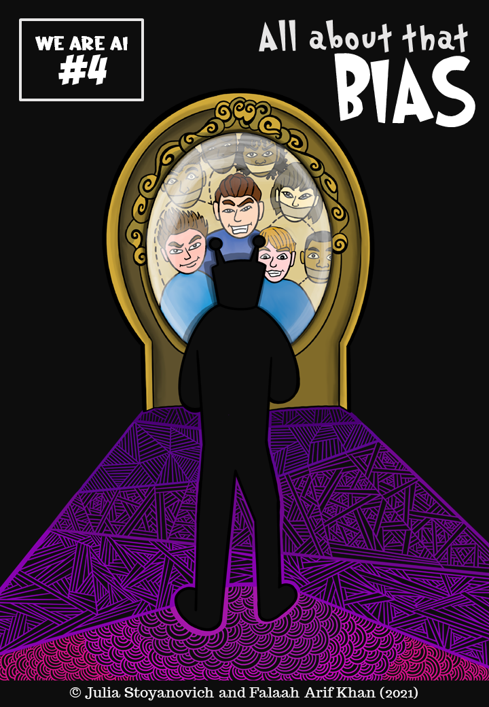
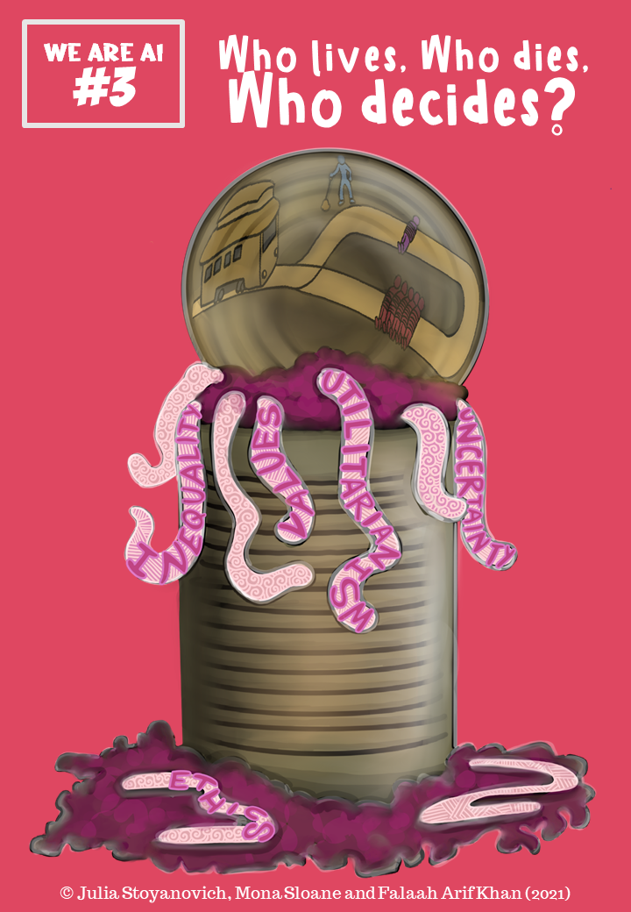
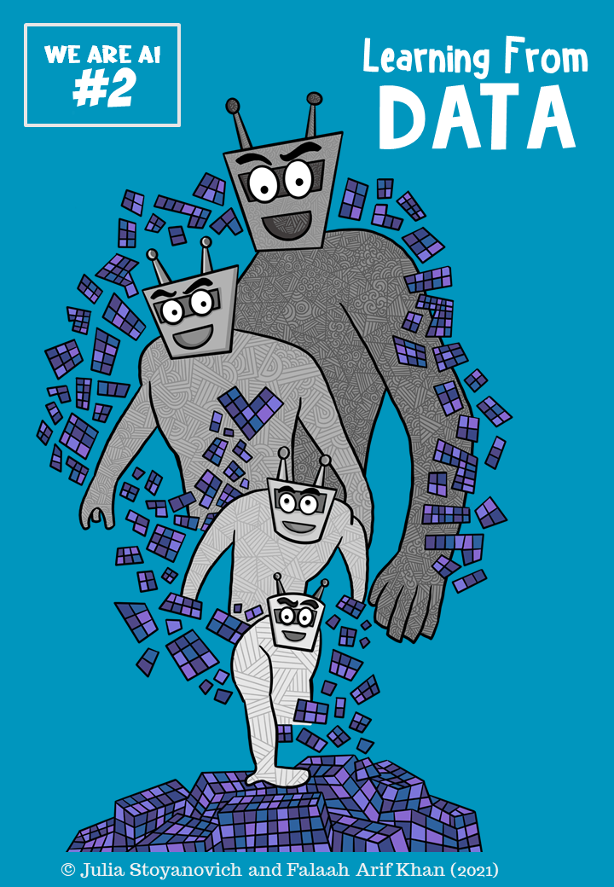
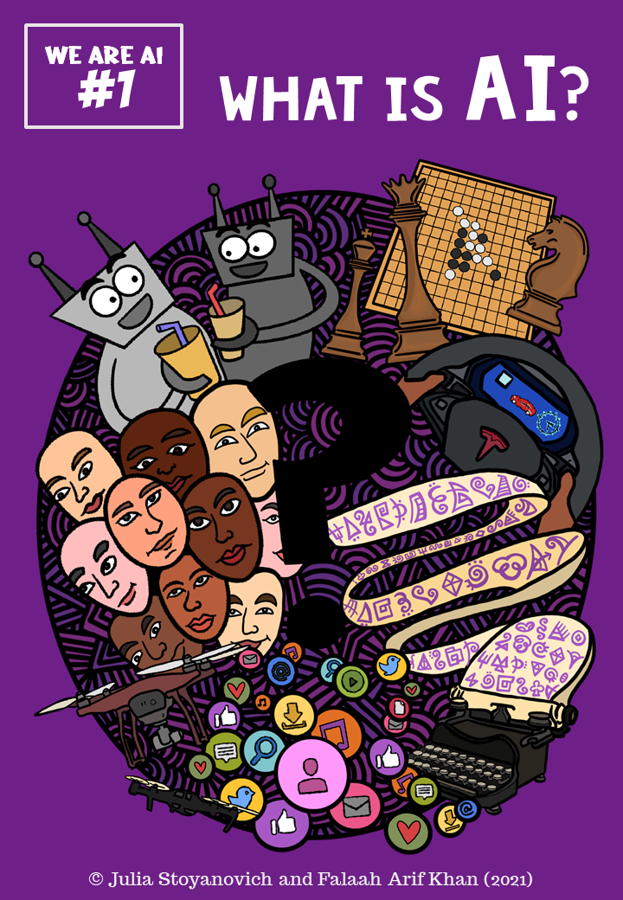
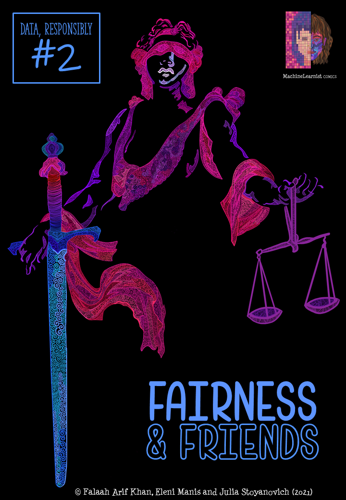

Who Am I?
Hi! I'm Falaah. I'm a Engineer/Scientist by training and an Artist by nature, broadly interested in reliable and "responsible" AI. Towards this end, I conduct fundamental research on "algorithmic fairness", and create scientific comics (and other artwork) to disseminate the nuances of this work in a way that is more accessible to a variety of (technical and non-technical) audiences. I'm currently a second-year PhD student at NYU's Center for Data Science, and an Artist-in-Residence at the Center for Responsible AI (R/AI) . I'm extremely lucky to get to do two things I absolutely love to do: fundamental research and creating scientific comics!
At NYU, I'm advised by the inimitable Prof Julia Stoyanovich. Broadly, we work on the societal impacts of AI, and the normative and technical foundations of algorithmic fairness. Check out the "Research" section of this page for more details about ongoing projects. Excitingly, Julia and I also create several comic series at NYU R/AI: the 'Data, Responsibly' Comic series, targeted at a semi-technical audience, and the 'We are AI' comics, created for the general public. We recently did a deep dive on the accessibility of the 'We are AI' comics through a series of roundtables with accessibility experts as part of the All Aboard! Project . These discussions were incredibly valuable, and inform the comics that I am currently creating. Stay tuned for details on new comics!
During the pandemic, I also co-created the 'Superheroes of Deep Learning' comics with Prof Zack Lipton, which documents the thrilling tales and heroic feats of ML's larger-than-life champions.
Before starting my PhD, I did an Artist Residency at the Montreal AI Ethics Institute. My visual essay, 'Decoded Reality', is an artistic exploration of the power dynamics that shape the design, development and deployment of ML systems. We present visual interpretations of how algorithmic interventions manifest in society, with the hope of provoking the designers of these systems to think critically about the socio-political underpinnings of each step of the engineering process.
Previously, I worked as a Research Engineer at Dell EMC, Bangalore where I designed and built data-driven models for Identity and Access Management (IAM). My research focused on behavior-based Authentication, online learning for CAPTCHA design and graph signal processing for dynamic threat modelling. For more details on these projects, check out the "Research" section, or my CV (linked at the end of this section).
My work in the industry showed me firsthand the pressing challenges of building 'production-ready' models. Contrary to the media narrative around AI, this technology is far from being 'sophisticated' --- we are yet to have figured out how to build models that are robust, reliable and designed to thrive in the wild. These challenges have informed my interest to explore the foundations of generalization, robustness and fairness. One interesting way to explore these questions is by critically assessing how AI impacts, and is in turn impacted by, the underlying social setting in which it was formulated.
News
Summer 2023: Co-facilitating the third offering of the 'We Are AI' public education course, to NYU librarians and non-academic staff!
March 2023: Our work on the effect of automated data cleaning on model fairness has been accepted to the Special Track at IEEE ICDE'23!
October 2022: Our work on Fairness as Equal Opportunity has been accepted to ACM EAAMO'22 for an Oral presentation! Watch the recording here.
October 2022: Over the summer, the lovely folks over at the Civic Software Foundation commissioned a bunch of artwork for their newly re-vamped website! Check it out, and find out more about the awesome work they do :)
September 2022: Our Interactive Introduction to Causal Inference was accepted to the VISxAI Workshop at IEEE VIS!
Aug 2022: Our paper on Stability Auditing of Personality Prediction AI was accepted to the Special Edition on Fairness and Bias of the Data Mining and Knowledge Discovery Journal!
Summer 2022: We (R/AI) ran a 6-week summer research program in collaboration with the Ukranian Catholic University! #ScienceForUkraine. Check out the final project showcase here!
July 2022: Giving D&I talks at IEEE MDM 2022 (Video) and ACM DEBS 2022 (Video) !
September 2021: Started my PhD at NYU !
August 2021: New Superheroes of Deep Learning comic 'Machine Learning for Healthcare' is out now!
May-June 2021: We just released a brand new, public-facing comic series, titled 'We are AI'! It's a 5-volume primer on AI, blending the social, the legal and the technical, for anyone and everyone, and it accompanies R/AI's new public education course of the same name.
April 2021: Giving an invited talk titled "It's funny because it's true: confronting ML catechisms" at the 'Rethinking ML Papers' Workshop @ICLR 2021! Video recording here. (My talk starts at ~2:48:00)
April 2021: 'Fairness and Friends' has been accepted as an exhibit to the 'Rethinking ML Papers' Workshop @ICLR 2021! Video explainer here.
March 2021: Hosting 'Decoded Reality' - a collaborative, community brainstorm session about the role of Power in the creation of Responsible AI, at MozFest 2021 , based on my visual essay of the same name!
March 2021: Presenting 'Fairness and Friends' - a translation tutorial that bridges scholarship from political philosophy and fair-ML - with Julia Stoyanovich and Eleni Manis, at ACM FAccT 2021! Recording is available here.
Feb 2021: Data, Responsibly Comics Vol 2: 'Fairness and Friends' is out now!
Jan 2021: RDS Comics, Vol 1: 'Mirror, Mirror' has been translated into French!!!
Dec 2020: Facilitating the MAIEI x RAIN-Africa collaboration 'Perspectives on the future of Responsible AI in Africa' workshop.
Dec 2020: The Spanish edition of RDS Comics, Volume 1: 'Mirror, Mirror' is out now!!!
Nov 2020: Facilitating the 'Privacy in AI' Workshop , by MAIEI and the AI4Good Lab
Nov 2020: Excited to be speaking at the 'Ethics in AI Panel' by the McGill AI Society
Nov 2020: Giving an invited talk on 'Ethics in AI', based off of Decoded Reality, at the TechAide Montreal AI4Good Conference + Hackathon
Nov 2020: Speaking about our 'Data, Responsibly' Comic books at the Rutgers IIPL Algorithmic Justice Webinar, with Julia Stoyanovich and Ellen Goodman!
Oct 2020: 'Mirror, Mirror' and 'Decoded Reality' have been accepted to the Resistance AI Workshop at NeurIPS 2020!
Oct 2020: Started the "Superheroes of Deep Learning" comic series, with Zack Lipton! Volume 1: 'Machine Learning Yearning' is out now!
Research
The focus of my research is the question ``What does it mean for the outcomes of a data-driven system to be fair?'', and how do we encode this pluralistic concept into algorithms? There are several perspectives from which I am looking at this question. The first is to ground statistical fairness definitions in strong normative foundations. This involves deeply engaging with literature in both fair-ML and moral philosophy to uncover the value judgements encoded in different mathematical criteria.
Equality of Opportunity (EO) is a political philosophy doctrine that objects to morally irrelevant factors affecting people's access to desirable positions in society. This is a rich space of ideas with different doctrines taking different views about which factors are morally relevant and irrelevant to decision-making, and about how to correct for the effect of morally irrelevant factors. Further, different EO doctrines target different opportunities. For example, Rawls's doctrine focuses on developmental opportunities such as access to education. In-built into these doctrines is the nature of opportunity being allocated, and we can exploit this as one way to characterize context. A metric-to-doctrine mapping between fair-ML and political philosophy allows us to uncover the value judgements embedded into different statistical criteria, while the implicit doctrine-to-context mapping in EO doctrines presents us with a way to reason about the appropriateness of context-specific fairness criteria.
The second focus of my research is to study how technical definitions of fairness trade off against other properties of ML systems such as stability. The intuition is that we should only care about whether the outcomes of a decision-making system are ``equally good'' for all people (fair), if the outcomes are good to begin with. Put differently, a system that is completely arbitrary, i.e., always returns a random guess, is trivially fair, and so fairness considerations need to be complemented with other important measures of predictive performance.
Validity is one such important property. We interrogated the validity of two real-world personality prediction AI used in hiring (called Crystal and HumanticAI, and advertised to be used by several Fortune 500 companies) by looking at the stability of the outputs they produce. One (among several) shocking findings of our paper was that these systems produce arbitrarily different scores for resumes that are identical in every other manner except file type (pdf vs rich text)! This finding illustrates that if outcomes are arbitrary then it is meaningless to think about fairness.
Github: https://github.com/DataResponsibly/hiring-stability-audit
From a conceptual standpoint, I'm also interested in the converse question: how do fairness interventions affect stability, i.e., does imposing fairness requirements make outcomes more (or less) arbitrary for certain social groups than for others? One way to think about this is through the lens of the elegant bias-variance decomposition of model error. I ask the question of whether this decomposition is different for different subgroups in the data.
The third line of my work focuses on how different data interventions in the model lifecycle affect the fairness and arbitrariness of predictions. This work takes a data-centric view, framing each stage in the lifecycle as a data transformation and studying its bias-transforming or variance-transforming effects.
It is a widely held socio-technical belief that data from socially marginalized groups tends to be more noisy, and this can manifest downstream as model unfairness. We interrogated this claim, and the impact of automating the detection and cleaning of data errors on model fairness. Counter-intuitively, we found that the incidence of automatically detected data errors --- missing values, outliers and mislabels --- does not track protected group membership, and yet the downstream impact of automated cleaning of these errors is more likely to worsen fairness than to improve it! We posit that this could be due to one or both of the following reasons: data errors for marginalized groups may be harder to detect or they may be harder to repair, impacting model fairness downstream. This result demonstrates the need to adopt a lifecycle view of fairness (e.g., to look at the interactions between error detection and data cleaning on downstream performance).
In this work we investigated the efficacy of a novel “who I am/how I behave” authentication paradigm. Conventional authentication works on a “what I know” (username/password) or “what I have” (device) model. Our system would study the user’s behavior while typing his/her username and use the activity profile as the key against which access was granted. This eliminated the need for the user to remember a password or have access to a registered device. Conversely, even if a password is cracked or a device is stolen, the bad actor would not be able to penetrate the system because his behavior would intrinsically differ from that of the genuine user.
CAPTCHAs, short for Complete Automated Public Turing Tests to tell Computers and Humans Apart, have been around since 2003 as the simplest human-user identification test. They can be understood as Reverse Turing Tests because in solving a CAPTCHA challenge it is a human subject that is appearing to prove his/her human-ness to a computer program.
Over the years we have seen CAPTCHA challenges evolve from being a string of characters for the user to decipher, to be an image selection challenge, to being as simple as ticking a checkbox. As each new CAPTCHA scheme hits the market, it is inevitably followed with research on new techniques to break these challenges. Engineers must then go back to the drawing board and design a new and more secure CAPTCHA scheme, which, upon deployment and subsequent use, is again, inadvertently subject to adversarial scrutiny. This arduous cycle of designing, breaking and then redesigning to strengthen against subsequent breaking, has become the de-facto lifecycle of a secure CAPTCHA scheme. This beckons the question; Are our CAPTCHAs truly “Completely Automated”? Is the labor involved in designing each new secure scheme outweighed by the speed with which a suitable adversary can be designed? Is the fantasy of creating a truly automated reverse Turing test dead?
Reminding ourselves of why we count CAPTCHAs as such an essential tool in our security toolbox, we characterize CAPTCHAs in a robustness-user experience-feasibility trichotomy. With such a characterization, we introduce a novel framework that leverages Adversarial Learning and Human-in-the-Loop Bayesian Inference to design CAPTCHAs schemes that are truly automated. We apply our framework to character CAPTCHAs and show that it does in fact generate a scheme that steadily moves closer to our design objectives of maximizing robustness while maintaining user experience and minimizing allocated resources, without requiring manual redesigning.
Machine Learnist Comics

Follow on Twitter , Facebook, Instagram and support on Patreon!
Latest Volumes!

Falaah Arif Khan and Zachary C. Lipton. “Superheroes of Deep Learning Volume 2: Machine Learning for Healthcare” (August, 2021)
Julia Stoyanovich and Falaah Arif Khan. “We are AI”. We are AI Comics, Volume 5 (June, 2021)
Julia Stoyanovich and Falaah Arif Khan. “All about that Bias”. We are AI Comics, Volume 4 (June, 2021)
Julia Stoyanovich, Mona Sloane and Falaah Arif Khan. “Who lives, who dies, who decides?”. We are AI Comics, Volume 3 (May, 2021)
Julia Stoyanovich and Falaah Arif Khan. “Learning from Data”. We are AI Comics, Volume 2 (May, 2021)
Julia Stoyanovich and Falaah Arif Khan. “What is AI?”. We are AI Comics, Volume 1 (May, 2021)
Falaah Arif Khan, Eleni Manis and Julia Stoyanovich “Fairness and Friends”. Data, Responsibly Comics, Volume 2 (Feb, 2021)

Falaah Arif Khan and Zachary C. Lipton. “Superheroes of Deep Learning Volume 1: Machine Learning Yearning” (Oct, 2020)

Falaah Arif Khan and Julia Stoyanovich. “Mirror, Mirror”. Data, Responsibly Comics, Volume 1 (Sept, 2020)

Falaah Arif Khan. "Meet AI" (June, 2020). In AAAI Interactive Magazine

Articles, Talks and More!
Interview with Hayat Life
I sat down with the folks at Hayat Life to talk about my ML comics - what inspired me to start making them, where I envision them going, and what to expect next!
RIIPL Algorithmic Justice Webinar Series
The amazing Julia Stoyanovich and I sat down with Ellen Goodman, from the Rutgers Institute for Information Policy and Law, to discuss the comedic treatment of AI bias, normativity and exclusion, in the context of our 'Data, Responsibly' Comic books!
Decoded Reality
Decoded Reality is a visual essay on the power dynamics that shape the design, development and deployment of ML systems. We present artistic interpretations of how algorithmic interventions manifest in society in the hope of provoking the designers of these systems to think critically about the socio-political underpinnings of each step of the engineering process.

MetroLab "Innovation of the Month" Feature
"Mirror, Mirror" was featured as the MetroLab Network+ Government Technology "Innovation of the Month". In this interview we discuss the origins of the project, our creative process and the future of Data, Responsibly Comics!

Hope Returns to the Machine Learning Universe
According to witnesses, Earth's been visited by the *Superheroes of Deep Learning*. What do they want? What powers do they possess? Will they fight for good or for evil? Read to learn more!.

Interview with AI Hub
I sat down with the folks at AIHub to chat about my research and art. We talk (meta-)security, scientific comics and demystifying the hype around AI.

Deep Learning Perspectives from Death Note: Another Approximately Inimitable Exegesis
Masked under a binge-worthy anime lies an adept critique of the ongoing deep learning craze in the industry. Here’s my commentary on the technical symbols in Death Note.

What is Meta-Security?
In this seminal essay, I explain the hottest up and coming sub-field of Machine Learning - Meta-Security!
Contact
Get in touch if you want to collaborate on an interesting project, want to commission some custom artwork, or simply want to discuss something wonderfully esoteric!